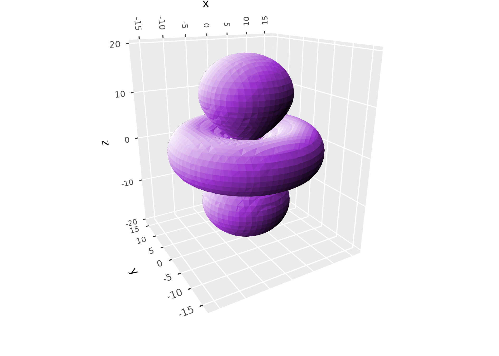
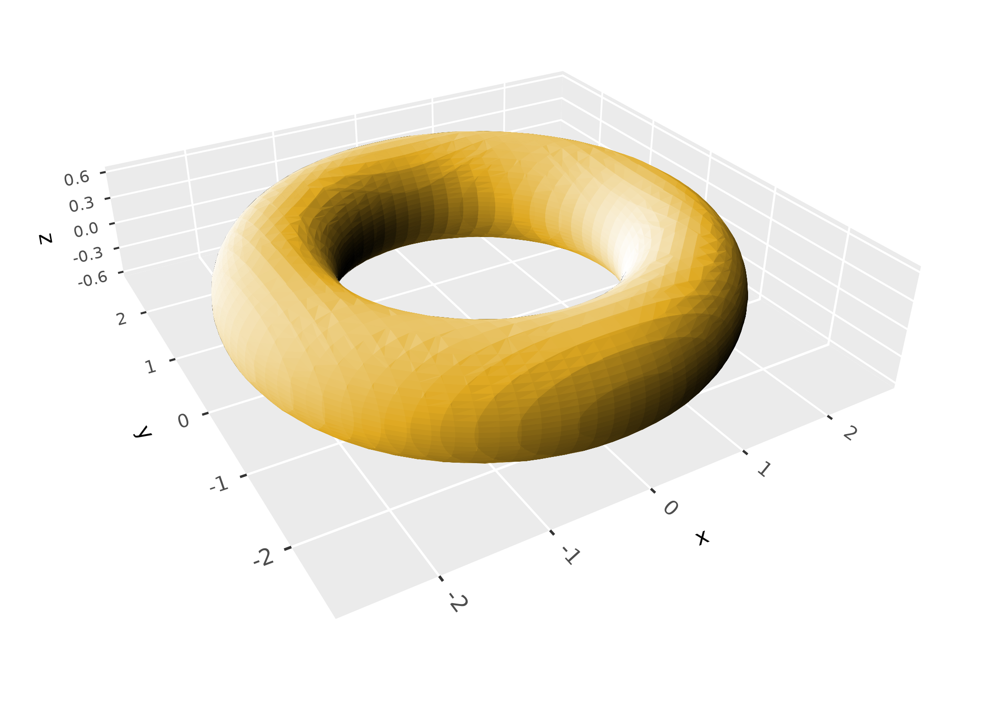
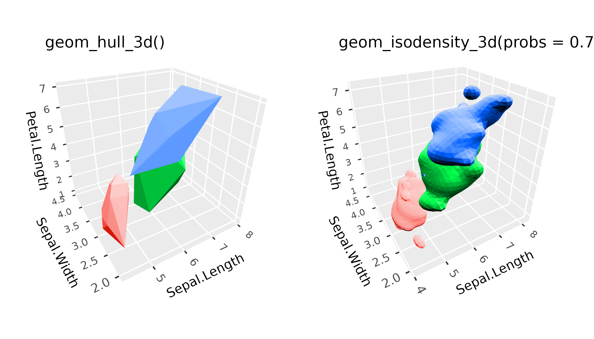
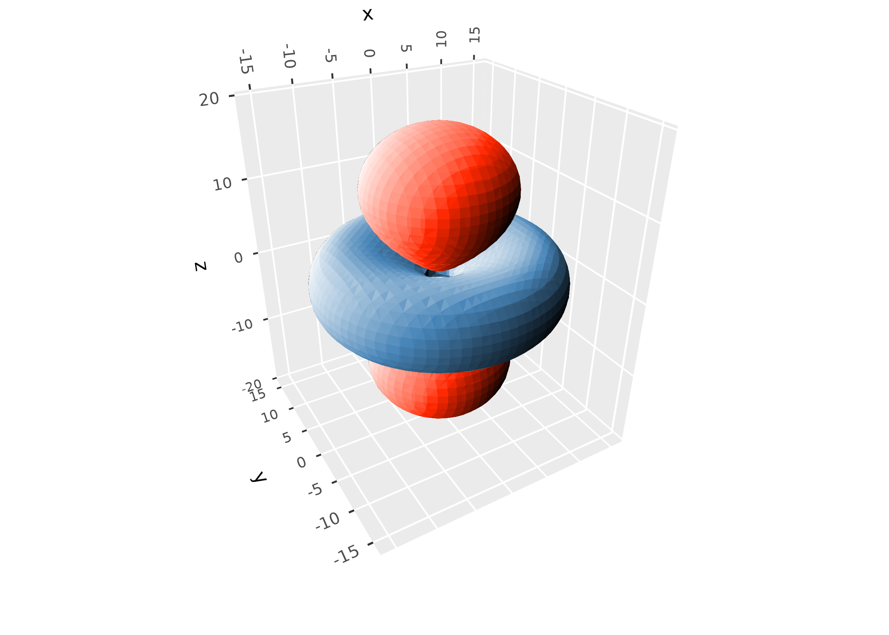
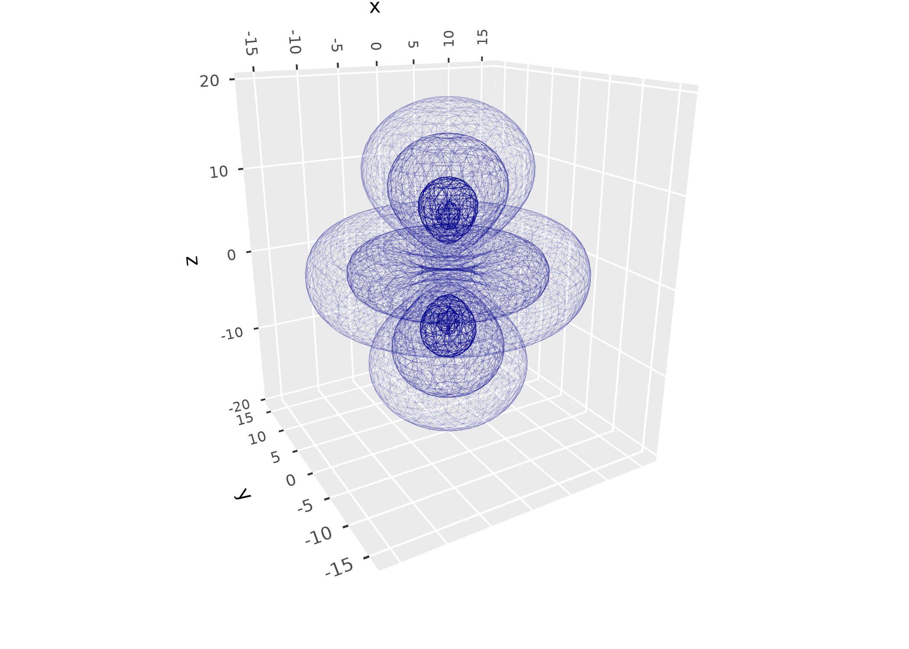
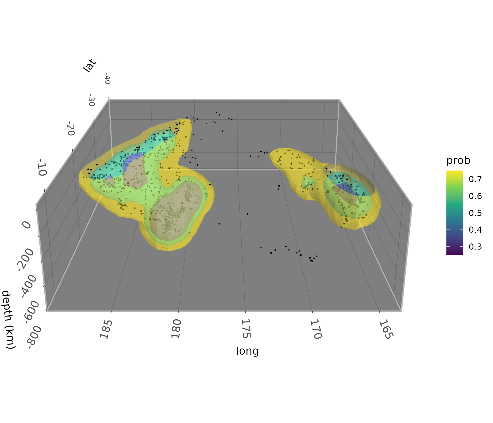
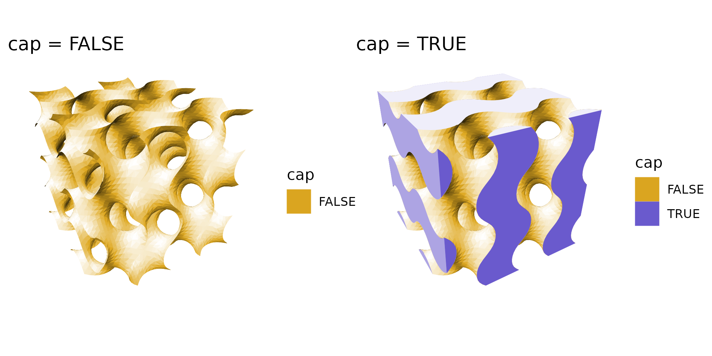
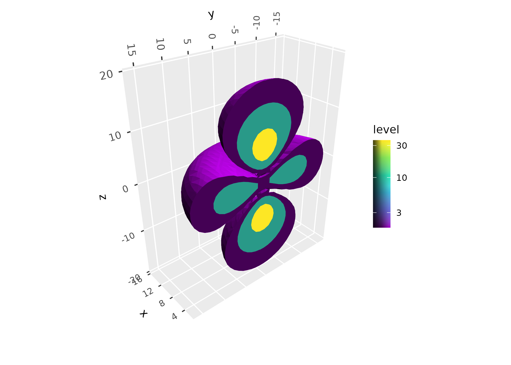
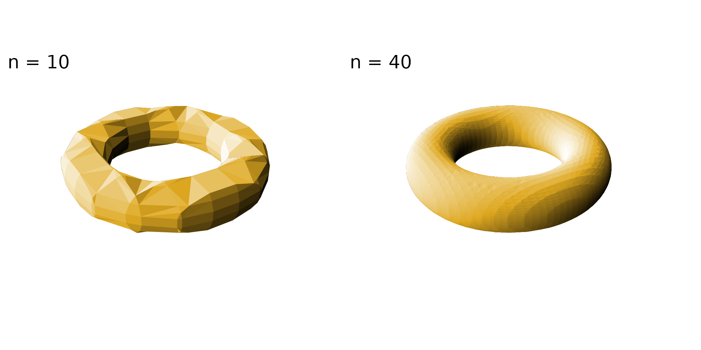

The surfaces article covers surfaces with a single z value for each (x, y) position, like terrain. This article covers volumes: regions of 3D space, drawn as the surfaces that bound them. Unlike terrain, these surfaces can fold over, nest inside one another, and close on themselves.
ggcube draws most volumes as isosurfaces: the surfaces on which some quantity defined throughout 3D space equals a given value. They’re the 3D analog of contour lines. The quantity can come from three kinds of source, each of which has a lower-dimensional counterpart among the surface layers:
| Source | Surface: z = f(x, y) | Volume: f(x, y, z) = c |
|---|---|---|
| Gridded data | geom_surface_3d() |
geom_isosurface_3d() |
| A function | geom_function_3d() |
geom_isofunction_3d() |
| The density of points | geom_density_3d() |
geom_isodensity_3d() |
geom_hull_3d(), which wraps point clouds in convex or
alpha hulls, is covered here too.
The isosurface layers triangulate surfaces with the marching cubes algorithm, from the {rmarchingcubes} package, which must be installed:
install.packages("rmarchingcubes")Data sources
Gridded data
Where geom_surface_3d() takes a grid of heights over x
and y, geom_isosurface_3d() takes a grid of values over x,
y, and z, mapped to the value aesthetic: a 3D raster, model
output, a medical scan, or the like. The data need a row for every
combination of x, y, and z
values, such as from expand.grid(), though the spacing
doesn’t have to be regular. The levels argument gives the
values at which to draw surfaces, defaulting to the midpoint of the
range of value.
Here’s the probability density of an electron in a hydrogen atom’s 3d orbital, the square of its wave function, which is largest in two lobes and a ring:
s <- seq(-20, 20, length.out = 40)
orbital <- expand.grid(x = s, y = s, z = s)
orbital$psi <- with(orbital, (3 * z^2 - (x^2 + y^2 + z^2)) *
exp(-sqrt(x^2 + y^2 + z^2) / 3))
ggplot(orbital, aes(x, y, z, value = psi^2)) +
geom_isosurface_3d(levels = 0.02 * max(orbital$psi^2), fill = "darkorchid") +
coord_3d(scales = "fixed", roll = -70) +
light(mode = "hsl", direction = c(-1, 1, 1))
Functions
Where geom_function_3d() draws the surface z = f(x, y)
of a function of two variables, geom_isofunction_3d() draws
the surfaces f(x, y, z) = c of a function of three. The function is
evaluated over a grid spanning the domain given by xlim,
ylim, and zlim, at a resolution set by
n. By default it draws the implicit surface f(x,
y, z) = 0, enclosing the region where the function is negative, which is
how implicit surfaces are usually written. A torus, for example, is the
set of points at a given distance from a circle:
torus <- function(x, y, z) (sqrt(x^2 + y^2) - 2)^2 + z^2 - 0.6^2
ggplot() +
geom_isofunction_3d(fun = torus, n = 40,
xlim = c(-3, 3), ylim = c(-3, 3), zlim = c(-1, 1),
fill = "goldenrod") +
coord_3d(scales = "fixed") +
light(mode = "hsl", direction = c(-1, 1, .5))
Point clouds
Whereas geom_density_3d() estimates the density of
points in two dimensions and draws it as a surface,
geom_isodensity_3d() estimates their density in three
dimensions and draws surfaces enclosing given fractions of it, by
default the densest half. Its h and adjust
arguments control the bandwidth of the kernel density estimate, and
n its resolution.
geom_hull_3d() takes a different approach to point
clouds, wrapping them in convex hulls or, with
method = "alpha", alpha hulls. Hulls show the full extent
of the points, outliers included, while density surfaces show where they
concentrate:
p <- ggplot(iris, aes(Sepal.Length, Sepal.Width, Petal.Length,
fill = Species, color = Species)) +
coord_3d() +
light(mode = "hsl", direction = c(1, 1, 1)) +
theme(legend.position = "none")
(p + geom_hull_3d() + ggtitle("geom_hull_3d()")) +
(p + geom_isodensity_3d(probs = 0.75) + ggtitle("geom_isodensity_3d(probs = 0.75)"))
Inside and outside
Each isosurface divides space in two, and faces outward from the
region it encloses, its inside. geom_isosurface_3d() and
geom_isodensity_3d() enclose the regions where values
exceed the level, which suits densities and concentrations, while
geom_isofunction_3d() encloses those where they’re below
it, following the convention for implicit surfaces.
geom_isosurface_3d() and geom_isofunction_3d()
take an inside argument to choose the other side.
The wave function of the orbital above is positive in its lobes and negative in its ring. To draw both, enclose the region above a positive level in one layer, and below a negative one in another:
level <- 0.15 * max(abs(orbital$psi))
ggplot(orbital, aes(x, y, z, value = psi)) +
geom_isosurface_3d(levels = level, fill = "tomato") +
geom_isosurface_3d(levels = -level, inside = "below", fill = "steelblue") +
coord_3d(scales = "fixed") +
light(mode = "hsl", direction = c(-1, 1, .5))
Which side is inside makes no difference to how a closed surface
looks with ggcube’s default lighting, but it does set which way surfaces
face. That determines which side gets a cap where surfaces are cut (see
below), which triangles cull_backfaces = TRUE removes, and
the direction of the computed normal_x,
normal_y, and normal_z variables.
Nested surfaces
Specifying multiple values for levels, or for
probs in geom_isodensity_3d(), gives nested
surfaces. These surfaces hide one another with the default opaque fill,
so you can use wireframes or translucent fills to view the internal
structure. Opaque surfaces are outlined in their fill color by default,
to hide seams between triangles, while translucent ones aren’t outlined.
These stats produce computed variables level or
prob that you can map aesthetics to, to tell them
apart.
Here’s the atomic orbital, with multiple levels shown simultaneously, drawn as a wireframe with line opacity mapped to point density:
ggplot(orbital, aes(x, y, z, value = psi^2)) +
geom_isosurface_3d(aes(alpha = after_stat(level)),
levels = c(0.02, 0.10, .50, .90) * max(orbital$psi^2),
fill = NA, color = "darkblue", show.legend = FALSE) +
coord_3d(scales = "fixed", roll = -70) +
light("none")
And here are the earthquakes in the quakes dataset,
whose densest regions trace the Tonga slab subducting under the Pacific
plate:
ggplot(quakes, aes(long, lat, -depth)) +
geom_isodensity_3d(alpha = .4, aes(fill = after_stat(prob)),
probs = c(0.25, 0.5, 0.75)) +
geom_point_3d(size = 0.2) +
scale_fill_viridis_c() +
coord_3d(yaw = 180, roll = -70, scales = "fixed", ratio = c(1, 1, .01)) +
labs(z = "depth (km)") +
light(direction = c(-1, 1, 1)) +
zlim(NA, 0) +
theme_dark() +
theme(panel.border = element_rect(color = "gray70"))
Cutaways
Limits on the plot’s scales cut isosurfaces cleanly where they cross
them, leaving them open there. With cap = TRUE, they’re
closed with flat caps instead, showing solid cross sections.
geom_isosurface_3d() and geom_isofunction_3d()
also cap surfaces where they meet the edges of their grid or domain. The
computed cap variable identifies caps, e.g. to color them
differently.
Here’s the gyroid function, shown with and without caps where it exits the cube:
gyroid <- function(x, y, z) sin(x) * cos(y) + sin(y) * cos(z) + sin(z) * cos(x)
p <- ggplot() + coord_3d() + light(mode = "hsl") + theme_void() +
scale_fill_manual(values = c("goldenrod", "slateblue"))
cut_torus <- function(cap) {
geom_isofunction_3d(aes(fill = after_stat(cap)), fun = gyroid, cap = cap, n = 40,
xlim = c(0, 4 * pi), ylim = c(0, 4 * pi), zlim = c(0, 4 * pi))
}
(p + cut_torus(FALSE) + ggtitle("cap = FALSE")) +
(p + cut_torus(TRUE) + ggtitle("cap = TRUE"))
Caps of nested surfaces tile the cut, each spanning the band between its level and the next, so a cutaway through nested surfaces shows their cross sections like a 2D density contour map. Here’s the orbital’s probability density at three levels, cut through its lobes and ring:
ggplot(orbital, aes(x, y, z, value = psi^2, fill = after_stat(level))) +
geom_isosurface_3d(levels = c(0.02, 0.1, 0.4) * max(orbital$psi^2), cap = TRUE) +
scale_fill_viridis_c(trans = "log10") +
coord_3d(scales = "fixed", yaw = -130) +
light(direction = c(0, -1, 1)) +
guides(fill = guide_colorbar_3d()) +
xlim(2, NA)
As elsewhere in ggplot2, limits remove data outside them before the layer’s stat is computed. For point clouds, that changes the density. For gridded data like the orbital’s, it just trims the grid, though ggplot2 warns about rows removed by x and y limits.
Practicalities
Resolution and speed
Isosurfaces are made of triangles, roughly in proportion to the
square of the grid’s resolution, and drawing time grows with the number
of triangles. n sets the resolution of
geom_isofunction_3d() and
geom_isodensity_3d(), defaulting to 30 points along each
axis; for geom_isosurface_3d(), it’s the resolution of the
data. Coarse grids give faceted surfaces, and fine ones smooth but slow
ones:
p <- ggplot() +
coord_3d(scales = "fixed", panels = "none") +
light(mode = "hsl", direction = c(-1, 1, .5)) +
theme_void()
resolution <- function(n) {
p + geom_isofunction_3d(fun = torus, n = n, fill = "goldenrod",
xlim = c(-3, 3), ylim = c(-3, 3), zlim = c(-1, 1)) +
ggtitle(paste("n =", n))
}
resolution(10) + resolution(40)
For opaque surfaces that close on themselves,
cull_backfaces = TRUE removes the triangles facing away
from the viewer, which are hidden anyway, saving some drawing time.
Lighting
Isosurfaces are lit like other ggcube surfaces; see the lighting article. Since lighting is computed
per triangle, coarse surfaces show their facets, especially under strong
or direct lighting. The default lighting mode darkens and brightens
colors by changing their value, so colors that are already at full
value, like "darkorange", can’t get any brighter on lit
faces; light(mode = "hsl") brightens toward white
instead.